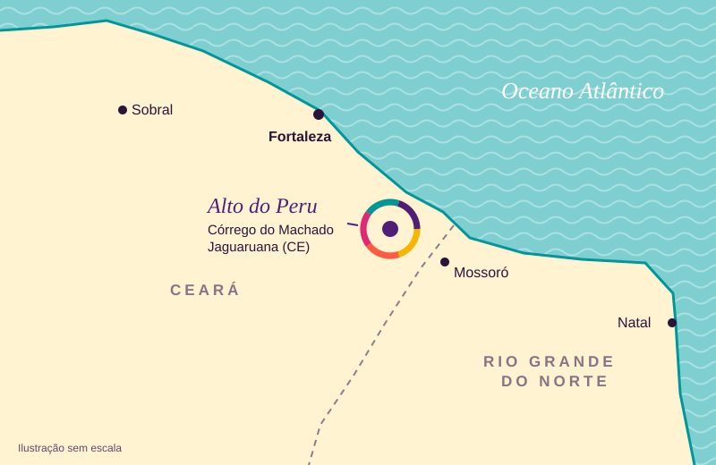

Um nome de aristocrata
Meu nome é Francisca Luciana da Silva. Nasci assim. Aos 48 anos ganhei o Lucena, de meu pai, e depois o Santos, do meu esposo. Fiquei com um nome enorme, de aristocrata, como dizem por aí, e eu acho isso muito engraçado.
Em 2018, estudante de Psicologia, escrevi pela primeira vez esta história. Ela começa num lugar de nome curioso, lá no interior do Ceará.
Alto do Peru
Nasci no Alto do Peru (sim, esse lugar existe), dentro de um vilarejo chamado Córrego do Machado, em Jaguaruana, minha terra natal. Minha mãe, Albertina, era uma moça do sertão e tinha apenas 16 anos quando eu nasci. Pouco depois ela partiu para Fortaleza, para trabalhar em casas de família, e mandava para o interior um pouco do que ganhava para ajudar no meu sustento. Quem me criou de verdade foi minha avó Nazaré, que Deus a tenha: eu a amava muito e era correspondida.

Nasci no sertão e nasci pobre. Os adultos passavam necessidade de comida e de roupa, e ainda enfrentavam a natureza, que trazia ou a seca constante ou a alagação. Perdíamos o pouco que plantávamos, e os bichos que minha avó criava morriam de sede e de fome.
Digo os adultos porque minha avó e minhas duas tias, Graça e Socorro, jamais me deixaram passar fome. Feijão, arroz e leite de cabra eu tinha todo dia. Eu era a princesa delas, a menina dos olhos da minha vovó. E era muito feliz: crescia alegre, livre na natureza e amada por todos.
Entre duas mães
Nos anos 70, meu tio Pedro voltou ao sertão. Ele tinha ido aventurar a vida nos garimpos do Norte, entrando por Roraima, pela Guiana e pela Venezuela, e voltava com algum recurso, dono de uma pequena fazenda num lugar chamado Passarão. Vinha buscar a família para longe das dificuldades da seca. Foi nessa viagem que ele me conheceu: quando saiu do sertão, eu ainda não existia.
Minha avó não queria ir. Minha mãe e minhas tias também não. Aquele era o lugar onde tinham nascido e crescido, e onde queriam viver até o fim. Mas ele foi com tanta vontade de tirá-las daquela vida que a mudança aconteceu.
No caminho, meu tio e minha mãe se desentenderam. Ele chegou impondo as próprias regras, como um coronel, e minha mãe tinha um jeito livre de viver. A viagem se partiu em Manaus, onde ela ficaria. E eu, com 6 anos, precisei escolher entre seguir para Roraima com minha avó, meu tio e minhas tias, ou ficar sozinha com minha mãe numa cidade enorme como era a Manaus dos anos 70.
Tão pequenina, e já diante de uma escolha que mudou a minha vida. Eu não tinha convivência diária com minha mãe, porque era minha avó quem me criava enquanto ela trabalhava na cidade. Mas meu coração de filha sentiu, naquele momento, que devia ficar com ela. E, graças a Deus, eu fiquei. Até hoje aquela cena volta à minha mente.
Duas mulheres fortes
Minha mãe e eu ficamos em Manaus por seis anos, sem contato com o resto da família. Nesse tempo nasceu minha querida irmã Eliana.
Foram anos de luta, os mais difíceis da minha vida. Faltava comida, roupa e calçado, e dentro de casa havia violência: eu nunca dormia sossegada. Morávamos numa casinha feita com as madeiras velhas que sobravam das festas juninas, num lugar onde a polícia vivia correndo atrás de bandidos. Muitas noites eu corria para puxar minha mãe do jirau onde ela lavava roupa, com medo de que ela levasse um tiro. Com medo de perdê-la. Ela era o meu maior tesouro, tudo o que eu tinha.
Minha mãe voltou a lavar roupa, ofício herdado da minha avó e das minhas tias, e fazia faxina em casas de família. Eu ia junto e ajudava, fazendo trabalho de adulto e sendo babá de crianças mais fortes do que eu. Íamos também ao CEASA catar o que os feirantes jogavam fora e ainda servia: tomate, cebola, batata, banana. Pense em duas mulheres fortes e sem medo de ir à luta!
Brinquedo, eu não tinha, nem velho nem novo. Às vezes as filhas das patroas da minha mãe me davam restos de bonecas, e eu amava ganhar aqueles restos. Ficava ainda mais feliz com um livrinho de historinhas, e assim logo aprendi a ler, com a Mônica, o Tio Patinhas e o Chico Bento. O resto eram as brincadeiras que não pediam dinheiro: pipa, bola, peteca, figurinha e roda, no imenso campo onde eu morava.
Tenho orgulho em contar que minha mãe, com o dinheirinho da lavagem de roupa, sentiu a importância do estudo na minha vida e me colocou numa escolinha particular, com muito sacrifício. Eu me esforcei e aprendi muito. Uma professora particular, dona Ruth, conseguiu para mim uma vaga numa escola pública, e ali eu me sobressaí. Era minha vontade ser alguém, cuidar da minha mãe e, um dia, ter meus filhos e jamais permitir que eles passassem pelo que eu passei.
Aquela menina cresceu de olhos baixos, carregando uma tristeza e uma vergonha que não eram dela. Aos 12 anos, com uma vontade enorme de estudar e de reencontrar minha avó, minha mãe encontrou nas ruas de Manaus um conhecido que sabia onde nossa família estava. E nós deixamos aquela vida para trás, para sempre.
O passarinho no colo
Pegamos uma carona da cidade até o interior, e nos deixaram na casa onde minha família morava, lá no Passarão. Minha avó contou que, naquele dia, um passarinho entrou em casa, pousou no colo dela e depois foi ficar na janela. Para ela, aquilo era sinal de boa notícia. E a boa notícia era eu.
Foi o choro mais alegre e o abraço mais terno que eu já senti na minha vida.
Duas pedras preciosas
Dali em diante minha vida seguiu o percurso considerado normal na vida de uma pessoa. Não tive festa de 15 anos, porque minha mãe ainda não tinha condições, mas eu estava perto dos que eu amava, e isso era o que importava.
Aos 21 anos completei meus estudos e vivi a emoção de conhecer alguém especial e me casar. Tive minha filha aos 21 anos e meu filho aos 22. O nascimento deles foi, para mim, como ganhar duas pedras preciosas.
Na mesma época do nascimento da minha filha, perdi minha avó amada. Foi a dor de perder um pedaço de mim. E fui seguindo a vida, um dia após o outro.
Este capítulo vai crescer com os próximos áudios de Luciana: a família que ela construiu e o caminho profissional.
De volta ao sertão
Só voltei para conhecer o lugar onde nasci aos 48 anos, por graça de Deus. Foi também aos 48 que ganhei de meu pai o Lucena que hoje faz parte do meu nome.
Como foi pisar de novo no Alto do Peru? Este capítulo aguarda o relato de Luciana.
O conto
Em 2018, como acadêmica do curso de Psicologia da Universidade Federal de Roraima, escrevi esta história pela primeira vez, num trabalho da disciplina de Psicologia do Desenvolvimento. Dei a ela o título de O que eu conto de mim. Este site nasce daquele conto.
A trajetória de Luciana na Psicologia será contada aqui a partir dos próximos áudios.
Deixa a vida me levar
Hoje sou uma vovozinha muito boba da Mariah, meu amor, minha vida.
Tudo o que aconteceu na minha vida foi por graça de Deus. Não reclamo nem do que foi ruim, nem do que foi bom, porque Ele permitiu. Nos ensinamentos da vida, aprendi a ser uma pessoa mais grata, mais amiga, mais família, mais solidária e mais paciente.
Porque a adulta que eu sou sorri, se alegra, gargalha e busca ser feliz a cada dia, e não é com coisa pequena que eu deixo essa felicidade ir embora. Hoje eu canto como meu tio João, ou junto com ele, aquele samba que manda deixar a vida levar a gente. Sou feliz e grata por tudo o que recebi de Deus.
Capítulos a caminho
Esta história segue sendo escrita. Os próximos capítulos vão chegar conforme Luciana gravar novos áudios.